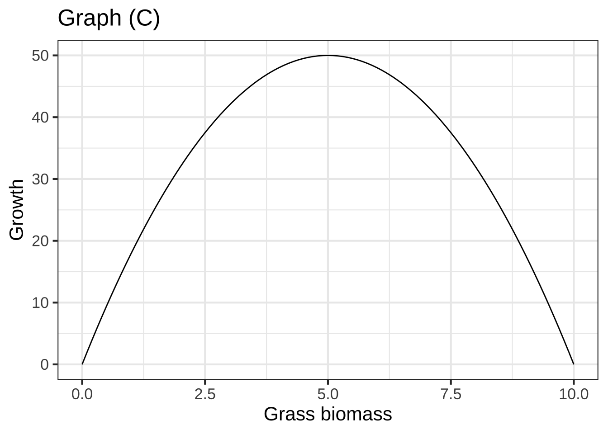
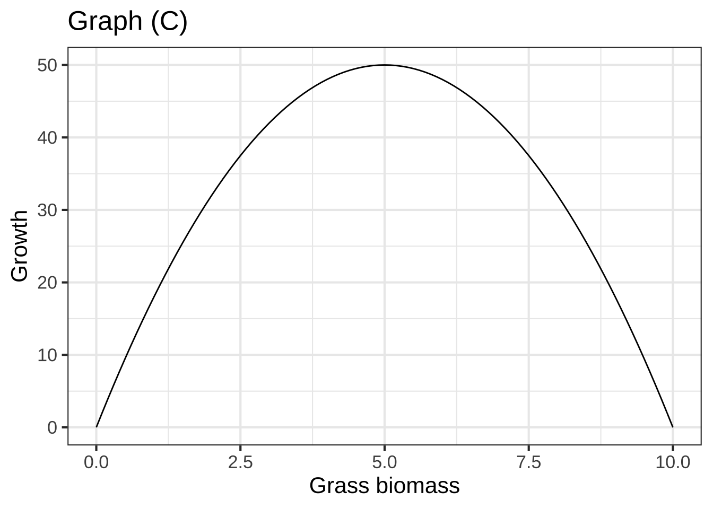

Chapter 51 Modeling dynamics
- Models leading to flow fields
- Objectives/topics
- Apply modeling techniques (from block 2) local low order polynomials
- Predatory/Prey (flow fields and the phenomena of the trajectories)
- SIR (flow fields and the phenomena of the trajectories)
- The differences between these two models
- Objectives/topics
- Additional models and flow fields (catch up day)
- Objectives/topics
- (Richardson’s arms race model and conflict model, action potentials) Numerics, look at the trajectories
- Exercise:
insert_calcZ_exercise("XX.XX", "iRZfBY", "Exercises/walnut-tell-pot.Rmd") - Analysis of phase plane with nullclines
- Objectives/topics
There are a few differential-equation forms that show up again and again in modeling problems. We’re going to introduce them to you here and, later, show you the solutions.
The proportional growth/decay model: \(\dot{x} = a x\)
- Simple population growth. The population is a function of time: \(x(t)\). Growth at any instant is proportional to the instantaneous population. For instance a population growing at 3% per year will have \(a \approx 0.03\) with units 1/year.
- Radioactive decay. The amount of the radioactive substance is a function of time: \(x(t)\). For example, phosphorus-32 (that is, \(^{32}\)P) has a half life of 14 days. The differential equation is \(\dot{x} = -a x\) with \(a \approx 0.049\) with units 1/day.
Change proportional to difference: \(\dot{x} = - a (x - x_\text{fixed})\)
- Newton’s Law of Cooling is about how a hot (or cold) object comes into equilibrium with the ambient temperature. For instance, you might have a cup of coffee at \(200^\circ\)F in a room at \(70^\circ\)F. Unless you drink it, the coffee will cool with time until it reaches the room’s temperature. In this setting, \(x_\text{fixed} = 70^\circ\)F. The value of \(a\) depends on how insulated the cup is (and details of evaporation, etc.). But if the coffee reaches very near to room temperature in 60 minutes, \(a \approx 0.5\) with units 1/minute.
Question A What are the units of the output of \(x(t)\)?
degrees F per minute︎✘ degrees F\(\heartsuit\ \) 1/minute︎✘ 1/degrees F︎✘
Question B What are the units of \(\dot{x}\)?
degrees F per minute\(\heartsuit\ \) degrees F︎✘ 1/minute︎✘ 1/degrees F︎✘
Question C What is \(x\)?
- the room temperature︎✘
- the initial temperature of the coffee︎✘
- the instantaneous coffee temperature as a function of timeNice!
- the fixed rate at which the coffee cools︎✘
- the instantaneous rate at which the coffee cools as a function of time︎✘
Question D What is \(\dot{x}\)?
- the room temperature︎✘
- the initial temperature of the coffee︎✘
- the instantaneous coffee temperature as a function of time︎✘
- the instantaneous rate at which the coffee cools as a function of timeRight!
Limited growth, e.g. \(\dot{x} = r x (1-x/k)\)
The proportional-growth model will lead to \(x(t)\) increasing without limit. Sometimes that’s a good model over short times, before \(x(t)\) has a chance to get unrealistically big. But over long periods of time, something’s gotta give.
- Population with a “carrying capacity.” For \(t\) when \(x(t)\) is very small, the population growth is well approximated by the usual proportion-growth model. For intermediate \(t\), the population has grown to a large enough size that it is consuming a substantial fraction of the available resources and population growth slows. When the population reaches the “carrying capacity” the growth stops (e.g. birth rate = death rate).
Question E If the units of \(x(t)\) is, say, rabbits, what is the units of \(k\)?
rabbits\(\heartsuit\ \) rabbits per day︎✘ rabbits per week︎✘ rabbits per year︎✘
Question F Suppose the units of \(\dot{x}\) is, rabbits per month, what is the units of \(r\)?
1/month\(\heartsuit\ \) rabbits per month︎✘ months per rabbit︎✘ rabbits per month-squared︎✘
Question G Even without finding the full solution \(x(t)\) to the differential equation, you can figure out how big the population will be when growth falls to zero. How big?
\(k\)\(\heartsuit\ \) \(k/r\)︎✘ \(r/k\)︎✘ \(1/r\)︎✘
51.1 Exercises
Exercise XX.XX:  5DVPWG
5DVPWG
This activity makes use of the following app:

Click on the picture of the app and it will open in a new browser tab. Arrange that new tab side-by-side with the one where you are reading this.
To solve a differential equation with the Euler method, you need two things:
- The differential equation itself. Several choices are available in the selector on the left side of the app. On the right side of the equation is the dynamics(x) function.
- An initial condition \(x(0)\). You can select this with the slider.
You will also need
- A stepsize \(h\). So long as this is “small enough,” the specifics don’t really matter.
How Euler works The first row of the table shows the situation at \(t=0\). At that time, the value of \(x\), that is \(x(t=0)\) is the initial condition that you set with the slider.
In the following, whenever we write \(x(t)\) we mean \(x\) at the time in the last row of the table.
- Knowing the value of \(x(t)\) the instantaneous value of \(\partial_t x\) can be found by plugging \(x(t)\) into the dynamics() function.
- Now that we know \(\partial_t x\), we know how fast \(x\) is changing. Multiply this rate of change by \(h\) to get the total change of \(x\) for the next step.
- Add a new row to the table at \(t+h\) with the \(x\)-value from the previous row added to the total change of \(x\) from that previous row. Loop back to (a) each time the “step” button is pressed.
Select \(\partial_t x = -0.5 x\) as the differential equation to solve. Press “step” several times. After each step, try to understand from the table and graphs why the new row added to the table is what it is.
Question A For \(\partial_t x = -0.5 x\), which of these best describes the shape of the solution? (You’ll get a better picture if you set x(0) to, say, 8.)
- linear decay to zero︎✘
- linear growth from zero︎✘
- exponential decay to zeroExcellent!
- exponential growth from zero︎✘
- exponential decay to \(x = 5\)︎✘
- exponential growth from \(x = 5\)︎✘
Question B For the differential equation \(\partial_t x = +0.5 x\), which of these best describes the shape of the solution? (You’ll get a better picture if you set x(0) to, say, 1.)
- linear decay to zero︎✘
- linear growth from zero︎✘
- exponential decay to zero︎✘
- exponential growth from zeroExcellent!
- exponential decay to \(x = 5\)︎✘
- exponential growth from \(x = 5\)︎✘
Question C For the differential equation \(\partial_t x = -0.4\,(x - 5)\), which of these best describes the shape of the solution when the initial condition is \(x=1\)?
- linear decay to zero︎✘
- linear growth from zero︎✘
- exponential decay to zero︎✘
- exponential growth from zero︎✘
- exponential decay to \(x = 5\)Correct.
- exponential growth from \(x = 5\)︎✘
Question D For the differential equation \(\partial_t x = -0.4\,(x - 5)\), which of these best describes the shape of the solution when the initial condition is \(x=9\)?
- linear decay to zero︎✘
- linear growth from zero︎✘
- exponential decay to zero︎✘
- exponential growth from zero︎✘
- exponential decay to \(x = 5\)Right!
- exponential growth from \(x = 5\)︎✘
Question E For the differential equation \(\partial_t x = 2\,x\,(1-x/8)\), which of these best describes the shape of the solution when the initial condition is \(x=1\)?
- linear decay to \(x=8\)︎✘
- exponential decay to \(x=8\)︎✘
- exponential growth from zero followed by exponential decay to \(x=8\)Nice!
- exponential decay to zero followed by exponential growth to \(x=8\)︎✘
Exercise XX.XX: L6hTUu
Consider a hay field that has just been harvested in the middle of summer. The grass has been cut short and the weather is still conducive to growth. What’s going to happen?
The grass will grow back, a very simple model of which will be \(\partial_t G(t) \equiv C\). This rate, \(\partial_t G(t)\), corresponds to the grass growing back at a constant rate. Imagine we measure this rate as tons of biomass per day, and measure time \(t\) in days.
Question A To model the everyday real world of growing grass, should \(C\) be positive or negative?
- positiveGood.
- negative︎✘ The amount of grass would be decreasing. This is not what we ordinarily think of as “growing”
- zero︎✘ \(\partial_t G(t) = 0\) implies no change at all.
Question B What units does the output \(G(t)\) have?
- tons per day︎✘ These are the units of \(C\) and therefore, because of the equality, of \(\partial_t G(t)\). We’re asking about the units of \(G(t)\), not \(\partial_t G(t)\).
- tonsExcellent!
- days︎✘ This is the unit of the input \(t\), not the output \(G(t)\).
- tons/day^2︎✘
Question C Which of these equations best describes the trajectory of the growing grass under the \(\partial_t G(t) = C\) dynamics?
\(G(t) = G(0) + C\)︎✘ \(G(t) = G(0) + C t\)\(\heartsuit\ \) \(G(t) = G(0)\sin(t/C)\)︎✘ \(G(t) = G(0) t + C\)︎✘
Question D According to the dynamics \(\partial_t G(t) = C\), what will \(G(t)\) look like (without future harvesting)?
- Growth until the field is choked up with grass.︎✘
- Growth without limit.Right!
- Oscillating growth and decline as the seasons pass.︎✘ This might be the case in the real world, but the simple model does not incorporate seasonality.
There are two obvious shortcomings of the model \(\partial_t G(t) = C\). First, when the amount of grass is very small (think little spouts spread widely apart) growth should me smaller than when the grass is plentiful. Second, at some point the grass is so dense that further growth is impossible, so \(\partial_t G(t)\) falls to zero (or even negative). The maximum amount of biomass that can be sustained by the field is called the grass’s carrying capacity.
The standard simple model for a system with growth to a carrying capacity is \[\partial_t G(t) = r G(t)(K-G(t))\] This model is famous and has a name: logistic growth.
Question E The logistic growth model has two fixed points. What are they?
- \(G=0\) and \(G=K\)Right!
- \(G=0\) and \(G=1/K\)︎✘ Plug \(1/K\) into the dynamics in place of \(G\). Do you get \(\partial_t G = 0\)?
- \(G = \pm K\)︎✘ Plug \(-K\) into the dynamics in place of \(G\). Do you get \(\partial_t G=0\)?
- \(G=0\) and \(G=-K\)︎✘ Plug \(-K\) into the dynamics in place of \(G\). Do you get \(\partial_t G=0\)?
Question F Which of these stories best describes the trajectory of the logistics growth version of \(G(t)\) starting with \(G(0)\) very small but positive?
- The grass grows slowly at first, then gradually growth speeds up and stays high.︎✘
- The grass grows rapidly at first then declines gradually to no growth.︎✘
- The grass grows slowly, then grows faster until it reaches a biomass where the growth rate declines steadily to zero.Good.
Here are three graphs.

 

Question G Which of the graphs represents a possible trajectory \(G(t)\)?
- A︎✘
- BExcellent!
- C︎✘ This is a graph of dynamics, not the trajectory. Look at the x-axis label.
- none of them︎✘
Exercise XX.XX: VCWRBs
You and your older cousin are on a road trip. She rented a car that has not only “cruise control” (a technology from the 1970s that holds a constant speed without driver intervention) but also “car following,” that keeps the car a set distance \(D\) behind the car in front. Your cousin, knowing that you are a CalcZ student, asks you how the “car following” system works.
First, define some terms. You tell your cousin to denote the current, instantaneous distance from the car ahead as \(\xi\). You point out that when \(\xi - D > 0\), you’re a greater distance than \(D\) from the car ahead and therefore the velocity should be increased so you catch up. On the other hand, when you’re too close (\(\xi < D\)) you should decrease your velocity. The car-following system automates this, the relationship being \(\partial_t \xi = b (\xi - D)\).
Your cousin has never encountered a name like \(\xi\) so you decide to simplify. “Let \(x = \xi - D\), so \(x\) is positive if you are too far behind, zero when you’re at the right distance, and negative if you are too far ahead.” Conveniently \(\partial_t x = \partial_t \xi\), so you can write down the automatic relationship in terms of \(x\): \(\partial_t x = b x\) with \(b\) a positive number, such as 1.
Question A Where is the fixed point of the dynamics \(\partial_t\, x = b x\)?
- \(x=D\)︎✘ No, it should be \(\xi=D\), which means that \(x=0\).
- \(x=0\)Excellent!
- \(\xi = 0\)︎✘ This corresponds to zero distance between you and the car in front of you. Not what we want!
- There’s no fixed point.︎✘
Question B Is the fixed point of \(\partial_t\, x = b x\) (with \(b > 0\)) stable?
- Yes, that’s why we can leave it to the automatic system.︎✘ True, we would want the automatic system to show stable fixed point behavior, but that’s not what’s happening here.
- No, the solution grows exponentially as \(e^{bt}\).Correct.
- Yes, the solution decays exponentially as \(e^{bt}\)︎✘ But since \(b > 0\), this wouldn’t be exponential decay but growth.
Something’s wrong with the system you’ve sketched out. You want a stable following distance, doing the right thing if the car ahead speeds up or slows down, but your system is unstable.
Question C Which of the following rules will have a stable fixed point at \(x=0\)?
- \(\partial_t\, x = -b x\) (with \(b > 0\))Correct.
- \(\partial_t\, x = b^2 x\)︎✘ The coefficient on \(x\) is still positive, so this system is unstable.
- \(\partial_t\, x = b x^2\)︎✘ This system is stable for disturbances that make \(x < 0\), but unstable for disturbances that make \(x > 0\).
- \(\partial_t\, x = 0 x\)︎✘ In this system, \(x\) doesn’t change.